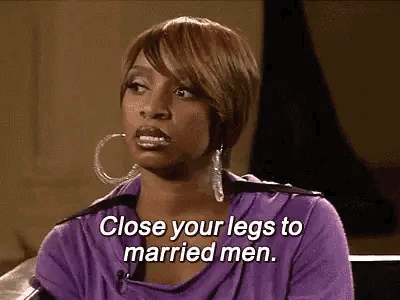
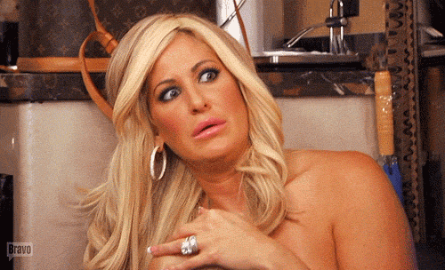

The Real Housewives of Atlanta, abbreviated RHOA, is an American reality television series that premiered on Bravo on October 7, 2008. Developed as the third installment of The Real Housewives franchise, it has aired fifteen seasons and focuses on the personal and professional lives of several women residing in and around Atlanta, Georgia.

The current cast of the sixteenth season consists of Porsha Williams, Drew Sidora, Brittany Eady, Kelli Ferrell, Shamea Morton-Mwangi, and Angela Oakley, Former cast member Phaedra Parks returns as a full-time cast member with former housewife Cynthia Bailey serving as a "friend of the housewives". Previously-featured cast members include original housewives NeNe Leakes, DeShawn Snow, Shereé Whitfield, Lisa Wu and Kim Zolciak-Biermann; and subsequent housewives Kandi Burruss, Kenya Moore, Claudia Jordan, Kim Fields, Shamari DeVoe, Eva Marcille, Marlo Hampton and Sanya Richards-Ross.

The Real Housewives of Atlanta has received moderately favorable reviews from critics and has been recognized as a "guilty pleasure" by several media outlets. However, the series has been criticized for appearing to fabricate portions of its storyline. It has anchored Bravo's Sunday night offerings since the show's third season in 2010,[1] eventually becoming Bravo's highest-rated program by 2014.[2]
The success of the show has resulted in ten spin-offs: Don't Be Tardy, The Kandi Factory, I Dream of NeNe: The Wedding, Kandi's Wedding, Kandi's Ski Trip, Xscape: Still Kickin' It, Kandi Koated Nights, Porsha's Having a Baby, Porsha's Family Matters and Kandi & The Gang.